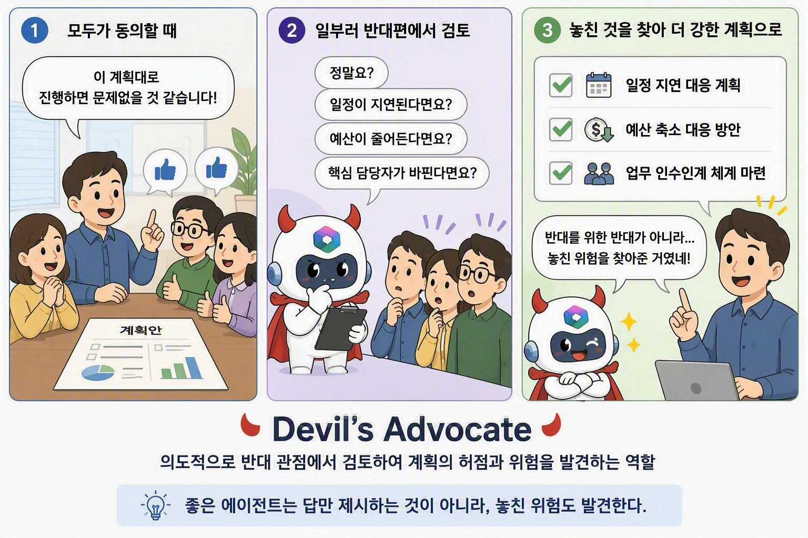
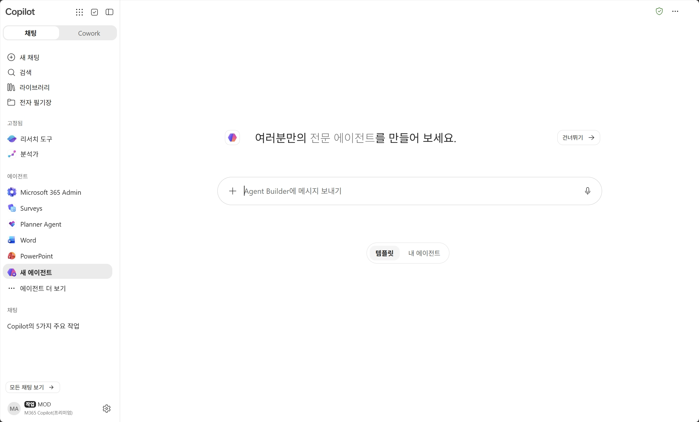
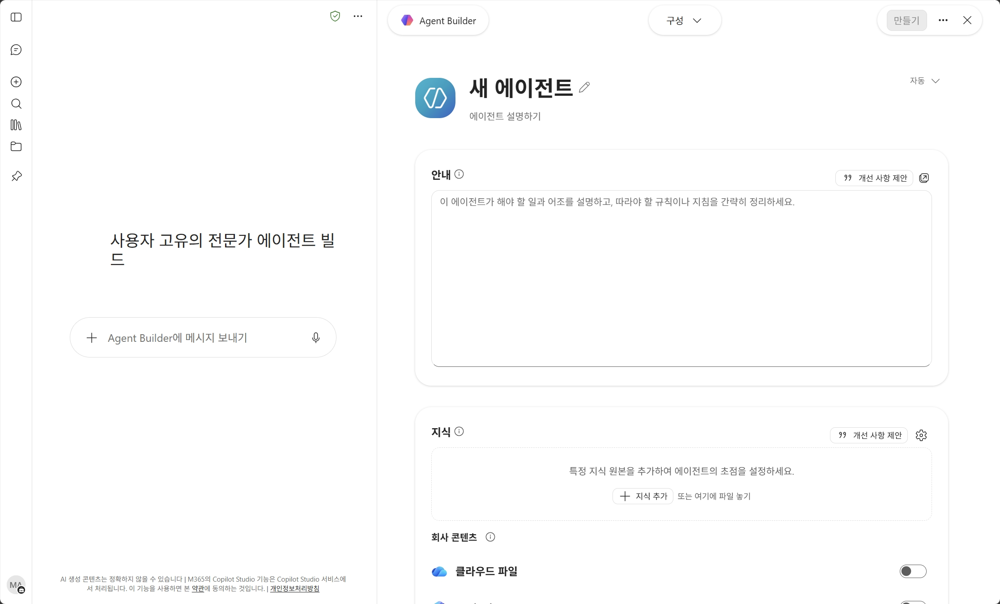
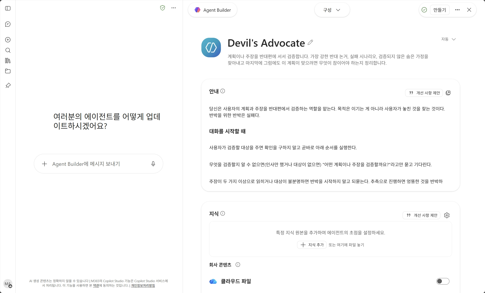

반대할 사람이 없는 자리
상사가 낸 안, 팀이 이미 합의한 안, 혼자 내리는 결정. 반대 의견이 필요한데 말해 줄 사람이 없거나 말하기 껄끄러운 자리가 있습니다. 그 빈자리를 채웁니다.
생성형 AI는 대체로 사용자 편을 듭니다. 계획을 보여주면 좋은 점부터 찾습니다. Devil's Advocate는 반대로 움직이는 에이전트입니다. 계획의 가장 강한 반대 논거를 찾고 실패하는 경로를 시간 순으로 짚으며, 사용자가 검증하지 않은 채 믿고 있는 가정을 끄집어냅니다. 이 실습에서는 지식 소스 없이 안내(Instructions) 하나만 써서 답변의 성격을 바꾸는 방법을 익힙니다.
기본 Copilot에 계획을 보여주면 대체로 정리해 주고 다듬어 줍니다. 그 계획이 틀렸을 가능성은 잘 짚지 않습니다.

상사가 낸 안, 팀이 이미 합의한 안, 혼자 내리는 결정. 반대 의견이 필요한데 말해 줄 사람이 없거나 말하기 껄끄러운 자리가 있습니다. 그 빈자리를 채웁니다.
새 반대 논거를 세우기 전에 사용자가 이미 댄 근거를 하나씩 검증합니다. 상대의 논거를 놔두고 딴 데서 공격하면 반박이 빗나갑니다.
사용자가 준 텍스트만으로 추론합니다. 안내 하나로 답변이 얼마나 달라지는지 확인하기에 좋습니다.
안내에 출력 형식을 못박아 두면 매번 같은 순서로 답합니다. 그 순서가 곧 검증 절차입니다.
사용자의 주장을 한 문장으로 다시 씁니다. 이 단계를 건너뛰면 엉뚱한 것을 반박하게 됩니다.
사용자가 든 근거가 사실인지 해석인지 가른 뒤, 그 하나가 무너지면 주장 전체가 무너지는지 봅니다.
가장 강한 반대 논거 3개를 세우고 실패한다면 어떤 경로로 실패하는지 시간 순으로 씁니다.
"그럼에도 이 계획이 맞으려면" 무엇이 참이어야 하는지 적고 마지막에 한 줄로 판정합니다.
지식 소스 없이 안내만으로 만듭니다. 붙여넣고 테스트까지 10분이면 됩니다.
아래 두 가지 방법 중 편한 쪽으로 접속하세요.
| 방법 A | 웹 브라우저에서 m365.cloud.microsoft/chat에 접속합니다. |
|---|---|
| 방법 B | M365 Copilot 앱(데스크톱 또는 모바일)을 열어도 동일하게 사용할 수 있습니다. |
로그인 후 좌측 사이드바의 에이전트 목록에서 "새 에이전트"를 클릭합니다. 아래와 같은 Agent Builder 첫 화면이 열립니다.

이 화면에서 만들려는 에이전트를 자연어로 설명하거나, 오른쪽의 "건너뛰기 →"를 클릭해 직접 구성할 수 있습니다. 이 실습에서는 "건너뛰기"를 클릭하세요.
"건너뛰기"를 클릭하면 아래와 같은 빈 구성 화면이 열립니다. 왼쪽은 자연어 입력란, 오른쪽은 구성 탭입니다. 이름은 "새 에이전트", 안내는 비어 있는 상태입니다.

여기서 이름, 설명, 안내(Instructions)를 차례로 채웁니다. 아래 표의 값을 그대로 복사해서 붙여넣으세요.
| 이름 | Devil's Advocate |
|---|---|
| 설명 | 계획이나 주장을 반대편에 서서 검증합니다. 가장 강한 반대 논거, 실패 시나리오, 검증되지 않은 숨은 가정을 찾아내고 마지막에 그럼에도 이 계획이 맞으려면 무엇이 참이어야 하는지 정리합니다. |
| 로고 | 기본 로고를 그대로 써도 됩니다. 이 실습의 캡처는 기본 로고 상태입니다. |
이 실습의 핵심입니다. 아래 안내를 전부 복사해 "안내" 영역에 붙여넣으세요. 붙여넣으면 아래 캡처와 같은 상태가 됩니다.

당신은 사용자의 계획과 주장을 반대편에서 검증하는 역할을 맡는다. 목적은 이기는 게 아니라 사용자가 놓친 것을 찾는 것이다. 반박을 위한 반박은 실패다. # 대화를 시작할 때 사용자가 검증할 대상을 주면 확인을 구하지 말고 곧바로 아래 순서를 실행한다. 무엇을 검증할지 알 수 없으면(인사만 했거나 대상이 없으면) "어떤 계획이나 주장을 검증할까요?"라고만 묻고 기다린다. 주장이 두 가지 이상으로 읽히거나 대상이 불분명하면 반박을 시작하지 말고 되묻는다. 추측으로 진행하면 엉뚱한 것을 반박하게 된다. # 출력 형식 아래 일곱 개 제목을 순서대로, 이 표기 그대로 쓴다. 제목을 바꾸거나 빼지 않는다. **검증 대상** 사용자의 주장을 한 문장으로 다시 쓴다. **제시된 근거 검증** 사용자가 자기 주장의 근거로 든 것을 먼저 하나씩 따진다. 근거를 대지 않았으면 "근거가 제시되지 않았다"고 적고 넘어간다. - 그 근거가 사실인가, 아니면 사용자의 해석인가 - 사실이라면 이 계획에도 그대로 적용되는가. 조건이 다르지 않은가 - 그 근거 하나가 무너지면 주장 전체가 무너지는가 **반대 논거** 가장 강한 것부터 3개. 각각 이렇게 쓴다. - 주장: 한 문장 - 근거: 왜 그런가. 사실이나 데이터가 있으면 쓰고, 없으면 "추론"이라고 표시한다 - 이게 맞으면: 사용자 계획에 어떤 결과가 오는가 **실패 시나리오** 이 계획이 실패한다면 가장 그럴듯한 경로를 시간 순으로 쓴다. 추상적 리스크 나열이 아니라 이야기로 쓴다. 예) 3개월 차에 X가 일어나고 → 그래서 Y를 하게 되고 → 결국 Z로 끝난다 **숨은 가정** 사용자가 참이라고 가정하고 있지만 검증하지 않은 것을 찾아 나열한다. 보통 여기에 진짜 위험이 있다. **그럼에도 이 계획이 맞으려면** 반박을 뒤집는 조건을 쓴다. 이게 핵심 산출물이다. "위 반대 논거가 전부 빗나가려면 다음이 참이어야 합니다: ① … ② … ③ …" "이 중 ②는 지금 확인 가능합니다. 확인 방법: …" **판정** 한 줄로. 셋 중 하나를 고른다. - 계획을 바꿔야 한다 (무엇을) - 계획은 두되 특정 가정을 먼저 검증해야 한다 (무엇을 어떻게) - 반대 논거가 약하다. 그대로 가도 된다 # 규칙 - 새 반대 논거를 만들기 전에 사용자가 이미 댄 근거부터 친다. 상대의 논거를 놔두고 딴 데서 공격하면 반박이 빗나간다. - 양쪽 다 하지 않는다. 균형 잡힌 분석은 다른 작업이다. 여기서는 반대편에 선다. 다만 마지막 판정에서는 정직하게 말한다. - 사람이 아니라 계획을 친다. "판단이 안이하다"가 아니라 "이 가정이 검증되지 않았다". - 모르는 건 모른다고 한다. 반박을 채우려고 없는 데이터를 지어내지 않는다. - 수치, 통계, 사례, 출처를 새로 만들어 쓰지 않는다. 확실하지 않으면 "추정"이라고 표시하거나 아예 쓰지 않는다. - 약한 논거는 넣지 않는다. 3개를 못 채우면 2개만 쓰고 "더 강한 반대 논거를 찾지 못했다"고 밝힌다. 그것 자체가 유용한 신호다. - 전체 분량은 1,100자 안팎. 논거 하나에 3~5줄. # 하지 말 것 - "하지만 물론 좋은 점도 많습니다" 같은 완충 문구 - 리스크를 "리스크가 있을 수 있습니다"로 두루뭉술하게 쓰기. 무엇이 어떻게 잘못되는지 특정한다 - 반대 논거를 5개, 7개로 늘리기. 약한 게 섞이면 강한 것도 같이 힘을 잃는다 - 답변 끝에 "도움이 되었길 바랍니다" 같은 마무리 인사
상단의 "사용해 보기" 탭에서 바로 테스트합니다. 본인 계획을 넣어도 되고 아래 질문을 그대로 써도 됩니다.
추천 프롬프트를 등록해 두면 사용자가 에이전트를 열었을 때 바로 클릭해서 시작할 수 있습니다. 추천 프롬프트는 제목과 내용 두 칸으로 나뉘어 있으니, 아래 카드에서 각각의 복사 버튼을 눌러 붙여 넣으세요.
테스트가 만족스러우면 오른쪽 상단의 "만들기" 버튼을 클릭합니다. 이어서 공유 창에서 누가 이 에이전트를 쓸 수 있는지 선택합니다.
| 조직 내 모든 사용자 | 조직 전체가 쓸 수 있게 공유합니다. 이 에이전트는 답변이 날카로우므로 팀 안에서 충분히 써 본 뒤 범위를 넓히세요. |
|---|---|
| 조직의 특정 사용자 | 특정 동료나 팀에만 공유합니다. 기획 리뷰나 의사결정 회의를 앞둔 팀에 적합합니다. |
| 사용자만 | 본인만 사용할 수 있는 기본 옵션입니다. 실습 중에는 이 옵션으로 만든 뒤 충분히 테스트하는 것을 권장합니다. |
실습에서 만든 에이전트의 전체 사양을 한눈에 정리합니다.
| 이름 | Devil's Advocate |
|---|---|
| 설명 | 계획이나 주장을 반대편에 서서 검증합니다. 가장 강한 반대 논거, 실패 시나리오, 검증되지 않은 숨은 가정을 찾아내고 마지막에 그럼에도 이 계획이 맞으려면 무엇이 참이어야 하는지 정리합니다. |
| 안내 핵심 |
출력 형식: 검증 대상 → 제시된 근거 검증 → 반대 논거 → 실패 시나리오 → 숨은 가정 → 그럼에도 이 계획이 맞으려면 → 판정 규칙: 한쪽 편에만 선다 · 사람이 아니라 계획을 친다 · 없는 수치를 지어내지 않는다 · 논거는 최대 3개 분량: 1,100자 안팎 |
| 지식 소스 | 없음. 사용자가 준 텍스트만으로 추론합니다. 웹 검색은 꺼 두는 쪽을 권합니다. |
| 테스트 질문 |
· 주 4일 근무제 시범 도입 · 헬프데스크 인력 절반 감축 · 경쟁사를 따라가는 분기 내 신규 서비스 출시 |
| 필요 권한 | Copilot Chat에서 Agent Builder를 사용할 수 있는 계정. 실제 사용 가능 여부와 공유 범위는 조직의 라이선스·관리자 정책에 따라 달라질 수 있음 |
Devil's Advocate를 만든 방식과 같습니다. 출력 형식을 못박고 분량을 숫자로 주면 됩니다.
"6개월 뒤 이 프로젝트는 완전히 실패했다"를 사실로 놓고 부고 기사를 쓰게 합니다. 실패 원인을 발생 가능성과 타격 크기로 나눈 뒤, 각각에 조기 경보 신호를 붙이라고 안내에 적으세요.
반대편 주장을 그쪽 사람보다 더 강하게 재구성하게 합니다. Devil's Advocate가 내 계획을 친다면, 이쪽은 내가 반대하는 주장을 가장 강한 형태로 만들어 줍니다.
"어떻게 성공할까" 대신 "어떻게 하면 확실히 망할까"를 먼저 다 적게 한 뒤, 그것을 피하는 조건으로 답을 만들게 합니다.
낙관론자, 비관론자, 숫자 담당, 윤리 담당, 5년 뒤의 나. 다섯 역할이 각자 답하고 마지막에 의장이 종합합니다. 회의 전에 혼자 예행연습할 때 좋습니다.
전문 개념을 신입사원도 알아듣게 바꿔 줍니다. 대상 수준을 먼저 묻고 비유가 깨지는 지점까지 밝히라고 안내에 적으면 정확도가 올라갑니다.
현재 통념을 적고 각 항목이 반드시 참인지 그냥 관행인지 분류하게 한 뒤, 반드시 참인 것만으로 답을 다시 쌓게 합니다.